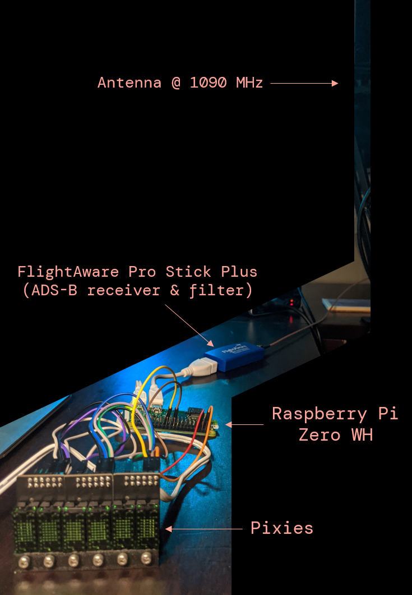
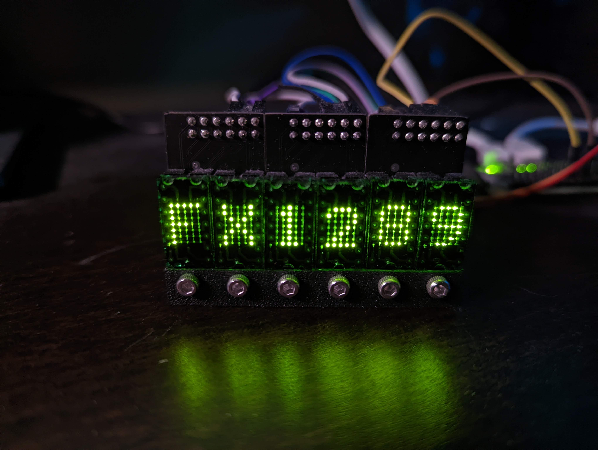
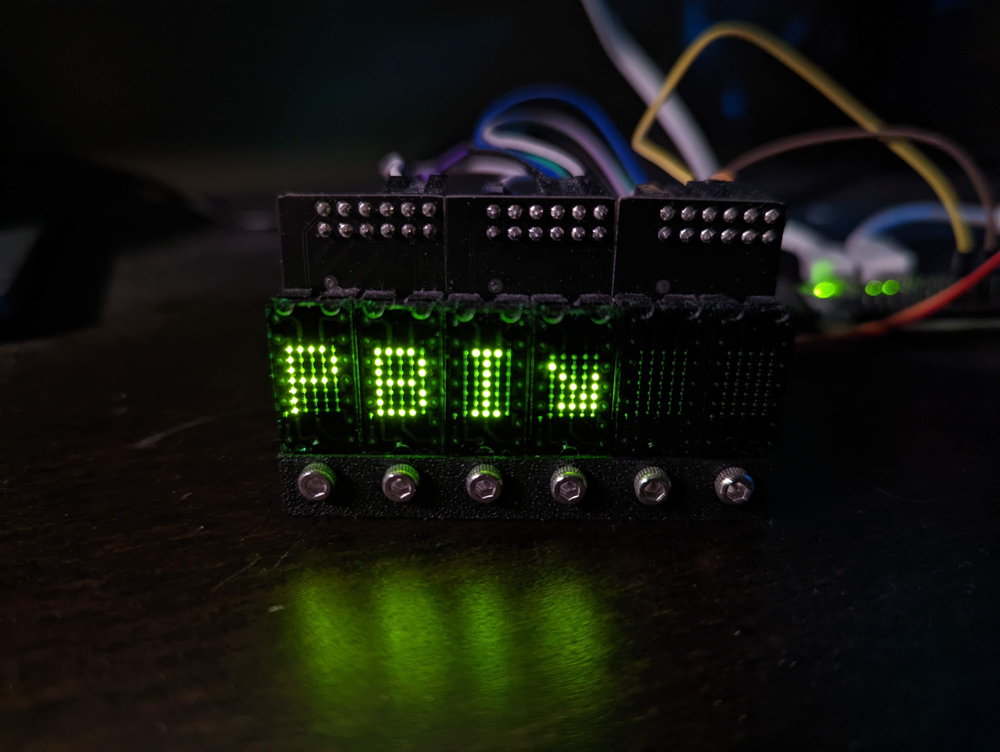
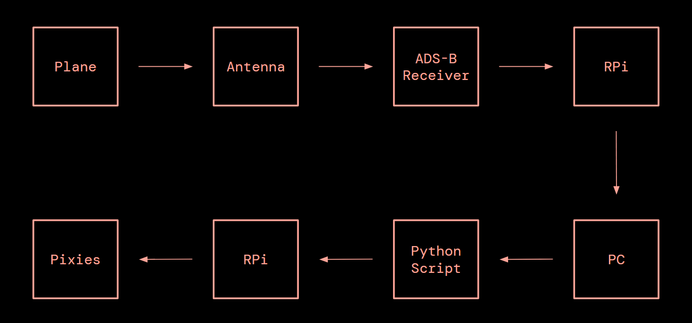

SUMMER 2020
FLYOVER v2

WORK TYPE solo
CONTEXT passion project
TIME ~80 hours
stuck at home, I wanted to stay connected with the ever-active world around me.
Flyover v2 is an LED matrix display inspired by Jeremy Merrill's Flyover that tells you where planes that fly overhead are going.
v2 uses more powerful hardware and displays more data with nearly 100% accuracy.
Flyover v2 is an LED matrix display inspired by Jeremy Merrill's Flyover that tells you where planes that fly overhead are going.
v2 uses more powerful hardware and displays more data with nearly 100% accuracy.
CONCEPT
my home sits under four air traffic patterns for Memphis International Aiport (MEM), the busiest cargo airport in the western hemisphere.
planespotting from my window became escapist for me during the pandemic,
and I wanted to make a live stock ticker-style display to show where the planes were going.
LISTENING TO PLANES

first, aircraft-emitted automatic dependent surveillance-broadcast (ADS-B) signals are picked up by the antenna and translated into data stored on a Raspberry Pi. after data processing, a message is displayed on the Pixie displays.
special thanks to the maker of the Pixies, Connor @ Lixie Labs, who helped troubleshoot the Raspberry Pi driver for this.
first, aircraft-emitted automatic dependent surveillance-broadcast (ADS-B) signals are picked up by the antenna and translated into data stored on a Raspberry Pi. after data processing, a message is displayed on the Pixie displays.
special thanks to the maker of the Pixies, Connor @ Lixie Labs, who helped troubleshoot the Raspberry Pi driver for this.
TRANSLATING DATA
I originally intended to run everything independently on the Raspberry Pi, but it did not have the processing power.

instead, my desktop copies the flight data from the Pi every 30s via SSH.
a Python script then searches for planes within 5mi and checks against a route database.
if the data is a match, the desktop sends a text file to the Pi for display.


the text file is parsed on the Pi with the Pixie driver. the display shows the maximum 6-digit flight number (IATA airline code + flight number), followed by route information in three possible formats:
ATL↘ (arriving at MEM)
↗ATL (departing from MEM)
ATL-DEN (passing)
ATL↘ (arriving at MEM)
↗ATL (departing from MEM)
ATL-DEN (passing)
IMPROVING ACCURACY (ADDED 2021)
the original open source excel database only had roughly 70% accuracy on regular routes, missing irregular routes entirely.
the database also required frequent updates to stay up to date. in 2021, v2 shifted to a Google Search API-based route checking system with over 95% accuracy.
after all, it has to be reliable!
after all, it has to be reliable!
WITH MORE TIME...
I revisited this project to improve the data accuracy.
if I were to again, I'd look at designing and making a solid housing for the displays (and hide those wires).